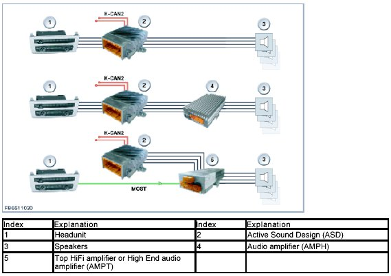
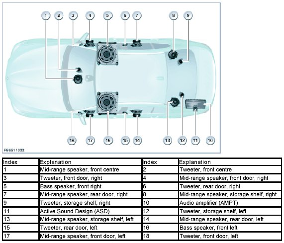
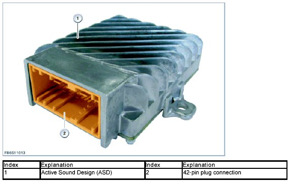
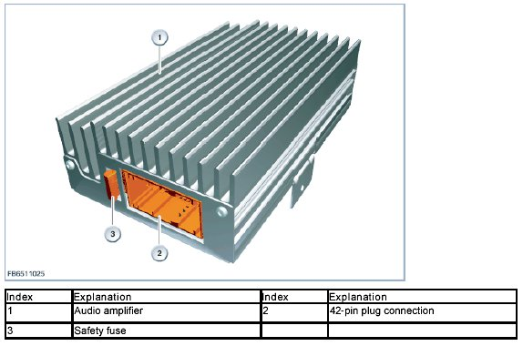
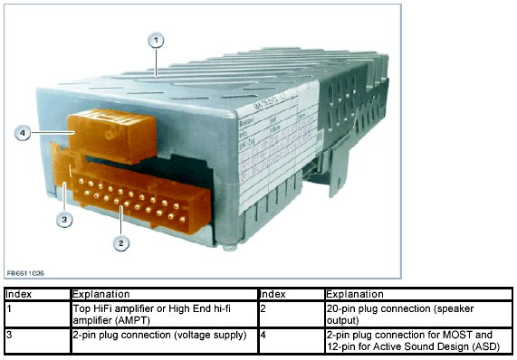
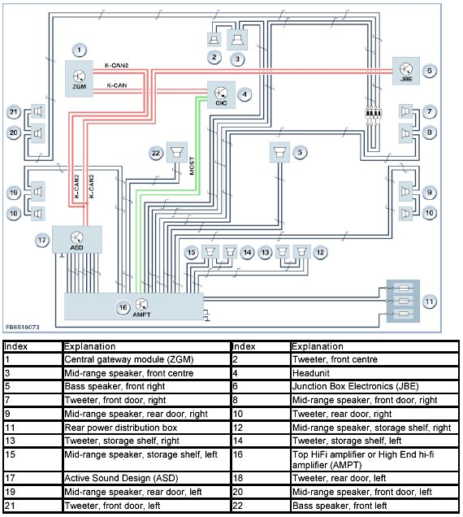

Active Sound Design
Active Sound Design
Active Sound Design
The Active Sound Design (ASD) affects the perception of the engine noise in the passenger compartment despite restrictive limit values for exterior noise. Depending on the engine speed and vehicle speed, the engine noise in the passenger compartment is adjusted according to the pedal sensor position. Audio playback of the Active Sound Design (ASD) is performed by the speakers.
The Active Sound Design (ASD) is available in the following audio systems:
- Stereo system
- Hi-fi system (AMPH)
- Top HiFi system or High End audio system (AMPT)
The following graphic shows the incorporation of the Active Sound Design (ASD) in the different audio systems.

Active Sound Design (ASD) in the stereo system (standard equipment).
The Active Sound Design (ASD) is woken in the stereo system by the K-CAN2 (E89 K-CAN). The Active Sound Design (ASD) fuses the audio signals coming from the headunit with the vehicle-specific and engine-specific audio signal. At the same time, the Active Sound Design (ASD) functions as an audio amplifier in this system. The combined and amplified audio signals are transmitted to the relevant speakers by the Active Sound Design (ASD).
Active Sound Design (ASD) in the hi-fi system.
In the hi-fi system, the Active Sound Design (ASD) is installed between the headunit and the audio amplifier (AMPH). The Active Sound Design (ASD) is woken by the K-CAN2 (E89 K-CAN). The Active Sound Design (ASD) fuses the audio signals coming from the headunit with the corresponding vehicle-specific and engine-specific audio signal. Then the Active Sound Design (ASD) forwards the modified signals to the audio amplifier (AMPH). The combined audio signals are transmitted to the relevant speakers by the audio amplifier (AMPH).
Active Sound Design (ASD) in the Top HiFi system and High End audio system with 16 speakers, for example.
Active Sound Design (ASD) is installed in the Top HiFi system as well as the High End audio system. The Active Sound Design (ASD) is woken by the K-CAN2 and generates the vehicle-specific and engine-specific audio signals. The Active Sound Design (ASD) continuously forwards the generated signals to the relevant audio amplifier (AMPT). The audio signals from the headunit and the signals from the Active Sound Design (ASD) are combined in the audio amplifier (AMPT) and transmitted to the relevant speakers.
The Active Sound Design (ASD), e.g. for the Top HiFi system in F10, is shown below.

Brief component description
Active Sound Design
The vehicle-specific and engine-specific algorithms for generating sound patterns are stored in the Active Sound Design (ASD). The integrated digital signal processor generates an analogue signal. The generated signal is combined with the audio signal. The Active Sound Design (ASD) functions as a sound generator. The Active Sound Design (ASD) varies this additional signal according to the relevant driving condition and pedal sensor position. The modified and amplified audio signals are transmitted to the relevant speakers.

Audio amplifier
The audio amplifier (AMPH) is an amplifier with digital equalizing. The audio signals are transferred from the headunit to the audio amplifier (AMPH) in analogue form. The internal digital equalizing adjusts the audio signals to the particular vehicle by means of coding. The audio amplifier (AMPH) is an amplifier with active frequency diplexers. Active frequency diplexers achieve better acoustic results than passive frequency diplexers. The modified and amplified audio signals are transmitted to the relevant speakers.

Top HiFi amplifier and High End HiFi amplifier
The digital Top HiFi amplifier and the High End HiFi amplifier (AMPT) convert the digital audio signals transmitted from the headunit to the MOST bus into analogue audio signals. The Top HiFi amplifier and High End hi-fi amplifier (AMPT) also receive the analogue signals from the Active Sound Design (ASD). The combined and amplified audio signals are transmitted to the relevant speakers.

System overview
The following graphic shows the system overview of the Active Sound Design (ASD) for the Top HiFi system in F10, for example.

System functions
The following system function is described for the Active Sound Design (ASD):
- Electronic power-up
Electronic power-up
The Active Sound Design (ASD) is connected to terminal 30B and ground for voltage supply. The Active Sound Design (ASD) is woken by the K-CAN2 (E89 K-CAN) and is immediately available.
Notes for Service department
Component replacement
During the service life of the vehicle, various repairs may become necessary. In the course of repairs, components for various software versions and hardware numbers may be installed. The control unit for Active Sound Design (ASD) can be replaced individually. The control unit for Active Sound Design (ASD) must always be encoded after replacement.
When replacing individual components, proceed according to repair instructions. Only Original BMW replacement parts guarantee the function of the Active Sound Design (ASD).
Diagnosis
The Active Sound Design (ASD) is connected to the K-CAN2 (E89 K-CAN) and readable for diagnosis.
We can assume no liability for printing errors or inaccuracies in this document and reserve the right to introduce technical modifications at any time.